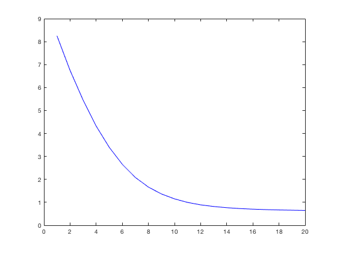

Sugguest Solution to Empirical Homework 1
Contents
Question 1
(1)
The Sequence Problem is formulated as
 subject to
subject to  ; ; .
; ; .
The Recursive formulation is
Control Variables are and . State Variables are and .
(2)
First convert an AR(1) process into a Markov Process with 15 state points. And then solve the dynamic problem with value function iteration. Here I only consider the case .
clear all beta=0.9; VFI1; save('Value90','grid_a','grid_y','prob','V','pol','polI'); clear beta=0.85; VFI1; V85= V; save('Value85','V85'); clear beta=0.95; VFI1; V95=V; save('Value95','V95'); clear load('Value90','grid_a','V'); load('Value85','V85'); load('Value95','V95'); plot(grid_a, V(:,8)','g', grid_a, V85(:,8)','r', grid_a, V95(:,8)','b');
Number of iteratios: 179, Convergence Achieved. Number of iteratios: 117, Convergence Achieved. Number of iteratios: 370, Convergence Achieved.

(3)
load('Value90','grid_a','grid_y','prob','V','pol','polI'); sz_a= size(grid_a, 2); sz_y= size(grid_y, 2); grida=repmat(grid_a',1,sz_y); gridy=repmat(grid_y,sz_a,1); mesh(grida,gridy,V)
(4)
mesh(grida,gridy,pol)
(5)
B=5000; a=zeros(B,20); for b=1:B aind=zeros(1,21); aind(1) = int64( find(grid_a'~=10, 1, 'first') ); yind=zeros(1,21); yind(1)= int64( find(grid_y' ~=6, 1, 'first') ); for t=1:20 yind(t+1)=Gen_yind(prob,yind(t)); aind(t+1)= polI( aind(t), yind(t)); end a(b,:) = grid_a( aind(1,2:21) ); end Mean_a = mean(a,1); x=1:20; plot(x, Mean_a, 'b')